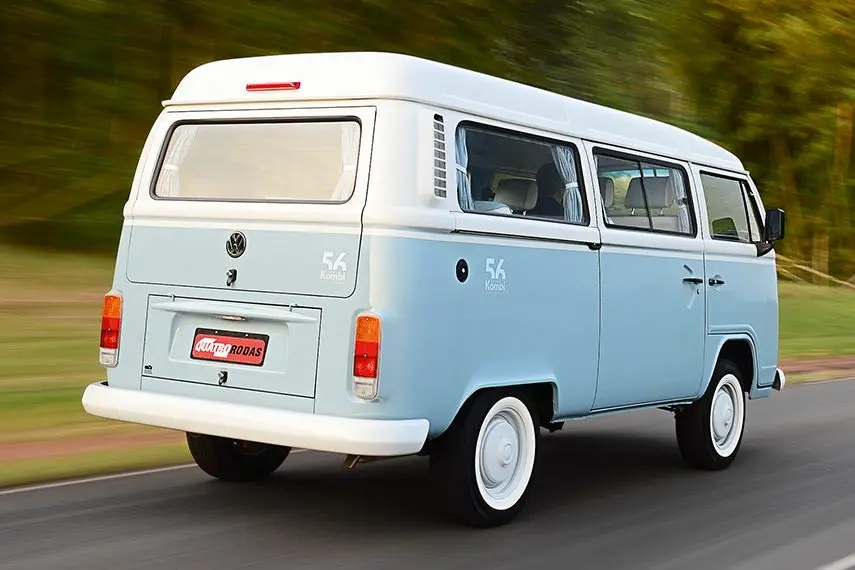

<!DOCTYPE html>
<html lang="pt-br">

</html>

<head>
    <meta charset="UTF-8">
    <meta http-equiv="X-UA-Compatible" content="IE=edge">
    <meta name="viewport" content="width=device-width, initial-scale=1.0">
    <title>kombi antiga</title>
    <link rel="shortcut icon" href="favicon.ico" type="image/x-icon">
    <link rel="stylesheet" href="style.css">
</head>

<body style="text-align: center; background-color: rgb(211, 211, 235);">

    <h1 style="color: rgb(209, 171, 66);">kombi antiga</h1>
    

    <p>
        O Volkswagen Kombi foi um veículo comercial ligeiro produzido pela empresa automotiva alemã Volkswagen, entre
        1950 e 2013. Por força de um decreto, os carros a partir de 2014, deveriam ser dotados de freio tipo ABS e
        possuir Airbag frontal duplo (para o condutor e passageiro do banco dianteiro).
    </p>
    <p>
        Sua construção robusta monobloco (sem chassi), suspensão independente com barras de torção, além da excêntrica
        posição do motorista no automóvel (sentado sobre o eixo dianteiro e com a coluna de direção praticamente
        vertical), o tornam um veículo simples e robusto, de baixo custo de manutenção.
    </p>
    <p class="link">
        Fonte: <a href="https://pt.wikipedia.org/wiki/Volkswagen_Kombi" target="_blank"
            rel="noferrer">Wikipedia-Kombi</a>


</body>

<html>